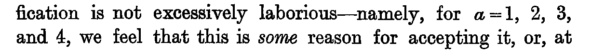
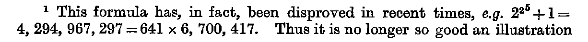

Chapter XXI. The Nature of Inductive Argument Continued
J. M. Keynes, A Treatise on Probability (London: Macmillan, 1921), first edition, pp. 242–250 (Cornell copy, PDF pp. 262–270). Formula atlas: every ledger row of the chapter beside the printed line it records.
| Formulas in Lean | 0 / 3 formulas (✓0 ≈0 ✎0), not yet 3 — 0.0% |
|---|---|
| Ledger rows | 7 |
| Formulas | 3 (display 0, inline 3; items 3, numbered 0) |
| Formulas by Lean status | ✓0 ≈0 ✎0 未3 |
| Notation | 4 (with a Lean counterpart 0) |
| Reference rows | 0 |
Every count on this page is computed from the census ledger, which is built from the page images of the 1921 first edition only (no translation, OCR or e-text is used to count). A formula is an expression containing a relation sign (=, ≠, <, >, ≤, ≥, ≡, ⊃, → and their printed variants, including formulas inside figures, tables and footnotes, and formulas quoted from other authors); a display formula counts one per printed line, so a chain of equalities set over three lines counts three, and an inline formula counts one per expression. A compound expression without a relation sign (such as a/h, g(φ, f) or x1x2…xn/ġh) is counted separately as notation; a bare symbol, even with subscripts, primes or bars, is not counted. Footnote formulas follow the same rule, and a formula reprinted on another page is counted again. The Lean column of a formula row takes one of four values, fixed mechanically: ✓ the printed relation appears as stated in a theorem (only the names of bound variables, Lean notation and the layout of subscripts may differ); ≈ a theorem states an algebraically equivalent form (cleared denominators, a definition substituted, a change of variables); ✎ the printed line is refuted or not derivable, and a corrected form is proved; 未 none of these (a line inside a proof, a definition only, or no counterpart).
ch21-001
- Transcription
2^{2^a} + 1- Lean
- 未
- Quoted from
- Fermat
- Anchor words
formula for a prime, namely,- Remarks
- 既存 F21.1
- Crop
- folio 242, x 125–1335, y 1422–1477 (full-size scan pixels)
ch21-002

- Transcription
a = 1, 2, 3, and 4- Lean
- 未(対応なし: 第III部の phase は本章を扱わない)
- Anchor words
laborious—namely, for- Remarks
- 既存 F21.2
- Crop
- folio 242, x 125–1335, y 1526–1628 (full-size scan pixels)
ch21-003
- Transcription
2^{2^a} + 1- Lean
- 未
- Reprint of
- ch21-001
- Quoted from
- Fermat
- Anchor words
ground for thinking that- Remarks
- 既存 F21.3 の前半
- Crop
- folio 242, x 125–1335, y 1829–1883 (full-size scan pixels)
ch21-004
- Transcription
a = 4- Lean
- 未(対応なし: 第III部の phase は本章を扱わない)
- Anchor words
it yields primes up to- Remarks
- 既存 F21.3 の後半
- Crop
- folio 242, x 125–1335, y 1932–1984 (full-size scan pixels)
ch21-005

- Transcription
2^{2^5} + 1 = 4, 294, 967, 297 = 641 × 6, 700, 417.- Lean
- 未(対応なし: 第III部の phase は本章を扱わない)
- Anchor words
disproved in recent times, e.g.- Remarks
- 既存 F21.4。脚注 1 行目末
2^{2^5}+1=で改行し 2 行目に続く。桁区切りコンマの後に細い空白 (原寸で確認) - Crop
- folio 242, x 125–1335, y 2096–2172 (full-size scan pixels)
ch21-006
- Transcription
5, 15, 35, 45, 65, 95- Lean
- 未
- Quoted from
- Jevons
- Anchor words
the following six numbers :- Remarks
- 既存 F21.5。終止ピリオドなし
- Crop
- folio 243, x 125–1335, y 865–942 (full-size scan pixels)
ch21-007
- Transcription
7, 17, 37, 47, 67, 97.- Lean
- 未
- Quoted from
- Jevons
- Anchor words
consider the six numbers,- Remarks
- 既存 F21.6。終止ピリオドあり
- Crop
- folio 243, x 125–1335, y 1172–1251 (full-size scan pixels)